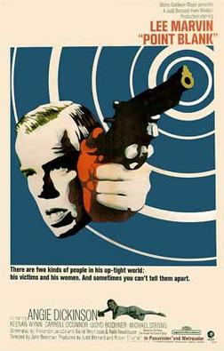
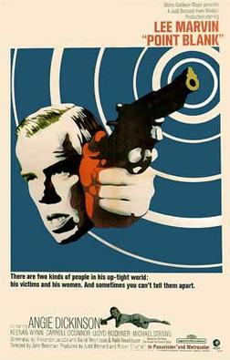
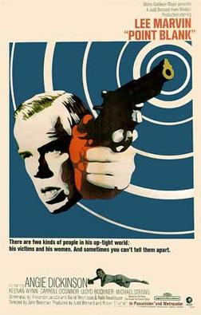

Over recent years, the rise in gun violence has polarized our views on gun control. On one side, gun-control supporters demand greater restrictions on who can purchase firearms. On the other side, gun-rights advocates claim that their ownership stands as indispensable freedom and right to protection. Regardless, it is clear that America has a very prominent gun culture – one that is influential even at the highest level of politics. This culture which is fueled by our history, the media, and the market, has established firearms as the essence of what it means to be American. Between the 19th and 20th centuries, gun culture overemphasized guns to represent national values such as family, justice, and protection. However, today, it has never been clearer that the gun community also represents power and vanity. The value of guns as a symbol of freedom persists despite its changes in meaning. As a result, its faults prevent us from acting upon the tens of thousands of Americans that are killed through gun violence each year.
It is clear that Hollywood perpetuates this problem. The appearance of firearms in box-office movies has increased by 51% from the last decade in 2010-2015 (source). I’m not proposing that we need to eliminate the use of guns in movies. However, Hollywood’s glorification of firearms has a substantial effect on the rate of gun violence in America. We see those core values constantly embedded into action and fight sequences, subconsciously desentizing us.
Some good examples of films that use but don't glorify guns are The Tin Star (1957), Point Blank (1967), Elephant (2003). Rather than for style, guns play an integral purpose in the storyline: to recognize the horrors of gun violence in America. They display its weight and power that on many people by realizing its consequences. In The Tin Star, Anthony Manns portrays the shotgun as an instrument of fear. Although the movie initially plays like its Western counterparts, at the end of the movie, the Sheriff realizes the losses that his and his opponents’ guns have made and decides to abandon his job.

In order to stop gun violence from being associated with heroism in American exceptionalistic culture, the media has to stop portraying guns as the symbol of freedom, justice, brawn and protection. Here are some things to consider when making a movie that includes the use of firearms: